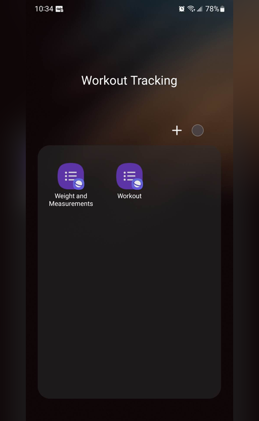
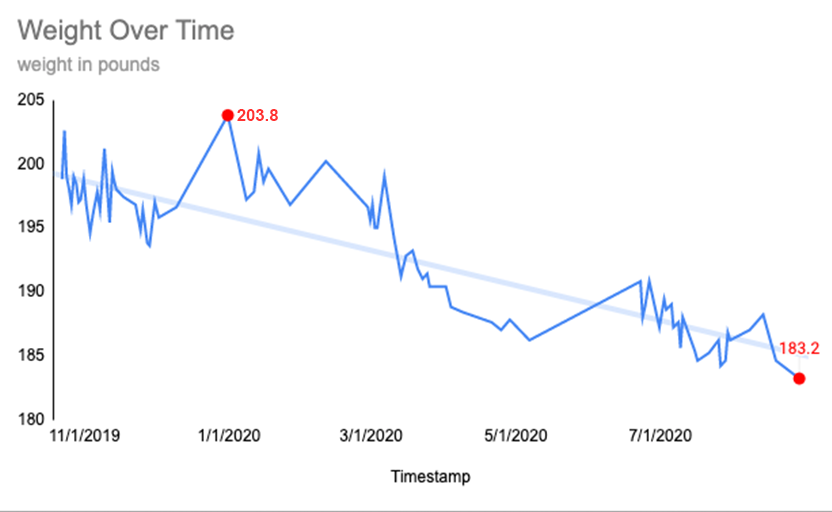
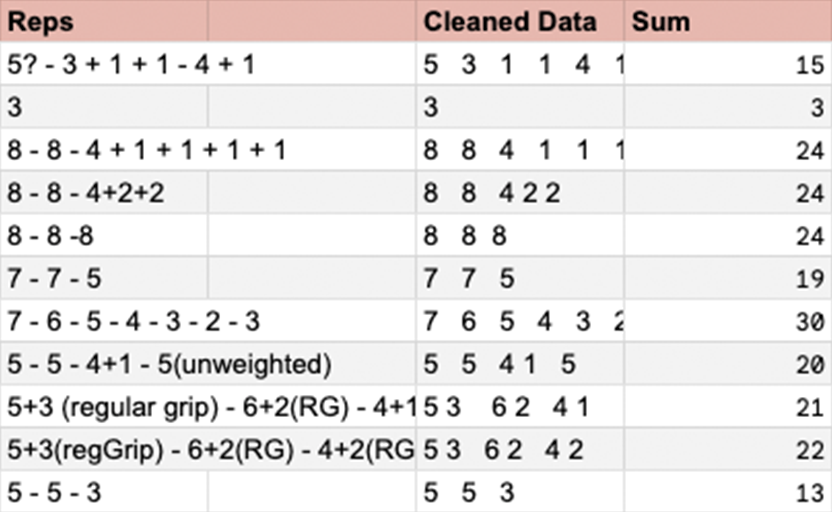

reinforcement Learning: ornare velit lacus, ac varius enim lorem ullamcorper dolore aliquam.
An walkththrough of my analysis and presentation
Regular exercise and physical activity play a crucial role in maintaining a healthy lifestyle. As part of a comprehensive fitness journey, individuals often monitor and track their workout progress to assess their performance, set goals, and make informed adjustments to their routines. When I moved in 2018, I realized that my health wasn’t what I’d wanted it to be. Being a little overweight, while also struggling to do the physical things I wanted to, I knew I had to make a change. Being a data driven person, there’s a near infinite amount of workout plans, coach advice, fitness standards, diets and more and I knew that with the help of data, I can find what works for me. In this data analysis project, we delve into the workout and weight data to see exercise patterns, performance trends, and overall progress.
In the context of tracking and analyzing workout data, utilizing a spreadsheet-based system like Google Sheets offers several advantages and makes it an ideal method for collecting and organizing such information. Here's an overview of why a spreadsheet was my preferred choice for maintaining a workout log:
 Google Sheets and Forms working
together offer a comprehensive solution for data collection, organization, analysis, and collaboration. The seamless
integration between these two tools enhances productivity, promotes real-time collaboration, and simplifies the
entire data management process. Whether it's conducting surveys, gathering feedback, or analyzing data, the combination
of Google Sheets and Forms provides a versatile platform for effective data-driven decision-making. Creating and pairing a
Form is as easy as clicking from a dropdown menu. Once a form is created and connected to a sheet, all submitted responses
will be automatically populated in the sheet with an associated timestamp.
Google Sheets and Forms working
together offer a comprehensive solution for data collection, organization, analysis, and collaboration. The seamless
integration between these two tools enhances productivity, promotes real-time collaboration, and simplifies the
entire data management process. Whether it's conducting surveys, gathering feedback, or analyzing data, the combination
of Google Sheets and Forms provides a versatile platform for effective data-driven decision-making. Creating and pairing a
Form is as easy as clicking from a dropdown menu. Once a form is created and connected to a sheet, all submitted responses
will be automatically populated in the sheet with an associated timestamp.


 Like most people, I often find myself without immediate access to my computer, but I almost always have my phone within reach. One of the primary factors that led me to choose Google Sheets and Forms for tracking and analyzing my workout data is their exceptional mobile usability. By setting up a direct link to my custom form as an icon on my phone's home screen, I significantly streamlined the process of inputting data, disregarding the added advantage of having my personalized tracking icons readily visible throughout the day. This convenient setup not only acted as a tremendous source of motivation but also served as a constant reminder to prioritize and maintain my fitness routine.
This analysis could go in a hundred different directions. From tracking the program over time, to strength gains, to specifics like how difficult do I rate an exercise that I did consistently over time. Ultimately there are two things I’d like to highlight here for demonstrating purposes, but know that the data goes a lot deeper.
 Like most people, I don’t walk around with my computer handy at all times. However, also, like most people, I almost always have my phone with me. One of the reasons I chose Google Sheets and Forms is the ease of use for inputting data on mobile. Setting up the link to my form as an icon I can throw on my phone’s home screen made inputting data significantly easier - ignoring the benefits of seeing my tracking icons in front of my face all day serving as a great motivator and reminder that I need to workout.
 Like most people, I don’t walk around with my computer handy at all times. However, also, like most people, I almost always have my phone with me. One of the reasons I chose Google Sheets and Forms is the ease of use for inputting data on mobile. Setting up the link to my form as an icon I can throw on my phone’s home screen made inputting data significantly easier - ignoring the benefits of seeing my tracking icons in front of my face all day serving as a great motivator and reminder that I need to workout.
walk around with my computer handy at all times. However, also, like most people, I almost always have my phone with me. One of the reasons I chose Google Sheets and Forms is the ease of use for inputting data on mobile. Setting up the link to my form as an icon I can throw on my phone’s home screen made inputting data significantly easier - ignoring the benefits of seeing my tracking icons in front of my face all day serving as a grea!
test=SUM(REGEXREPLACE(SUBSTITUTE(SUBSTITUTE(SUBSTITUTE(A2, "+", " "), "?", ""), "-", " "), "\([^()]*\)", ""))
reinforcement Learning: ornare velit lacus, ac varius enim lorem ullamcorper dolore aliquam.

Aenean ornare velit lacus, ac varius enim lorem ullamcorper dolore aliquam.

Aenean ornare velit lacus, ac varius enim lorem ullamcorper dolore aliquam.